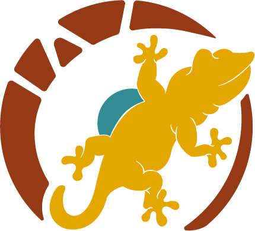
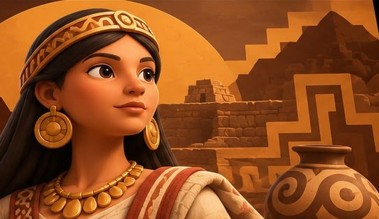
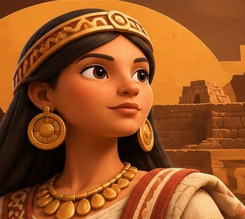

01
Autoridad
Algunas mujeres fueron reconocidas como señoras principales y ejercieron funciones de gobierno en sus curacazgos.


MUJER
Descubre el legado de las mujeres Tallanes.
01 · CONOCE SU HISTORIA
Las capullanas fueron mujeres que ejercieron autoridad en determinados curacazgos de la costa norte del antiguo Perú, especialmente en el territorio tallán de Piura.
Las crónicas de los primeros contactos con los españoles describieron a mujeres que eran reconocidas como señoras y obedecidas por sus comunidades.
Los estudios no coinciden en todos los detalles sobre cómo heredaban el poder o cuánto duraba su autoridad. Por eso, conocer a las capullanas también significa comparar testimonios y estudiar las fuentes históricas.

La palabra “capullana” fue usada por cronistas para referirse a mujeres que ejercían cargos de cacicas o señoras principales. Fuentes: Ministerio de Educación y Walac Noticias.
02 · AUTORIDAD Y MEMORIA
Las capullanas muestran que, en algunos señoríos tallanes, las mujeres podían ocupar posiciones de gobierno y tener un papel decisivo en la vida de su comunidad.
Algunas mujeres fueron reconocidas como señoras principales y ejercieron funciones de gobierno en sus curacazgos.
Las fuentes describen casos en que una hija podía asumir el cargo familiar. Las formas de sucesión variaban y siguen siendo materia de estudio.
Su historia forma parte de la memoria cultural de Piura y es una referencia para valorar el liderazgo femenino.
No debe entenderse que todas las comunidades tallanes tuvieron un único sistema político: las fuentes históricas muestran distintas interpretaciones. Leer el debate histórico.
03 · PON A PRUEBA LO QUE APRENDISTE
Elige una respuesta para continuar.
Contenido educativo basado en materiales del Ministerio de Educación y estudios difundidos por Walac Noticias.